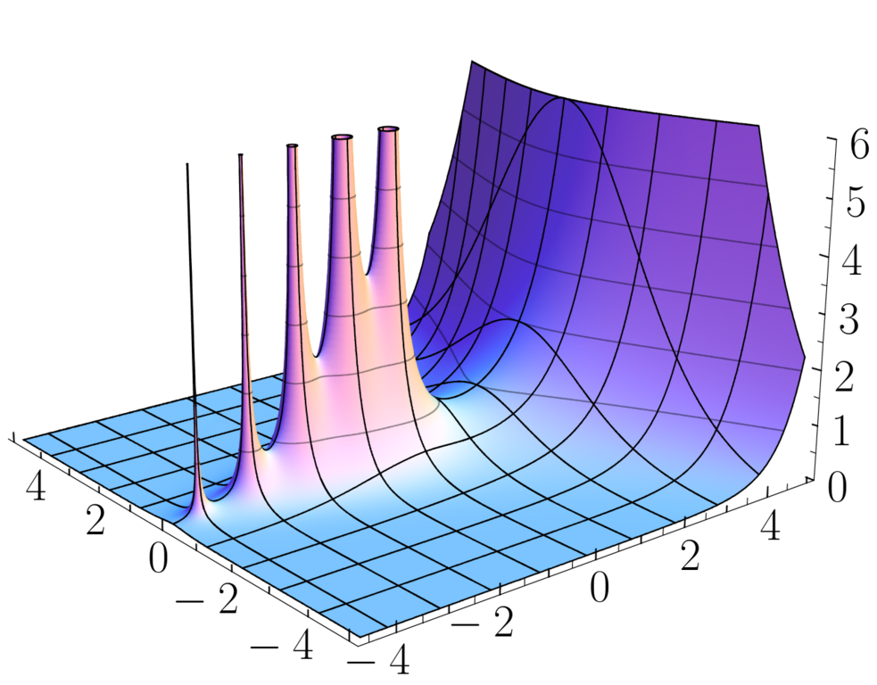

Any polynomial \(P(z)\) can be expressed as the product of its zeros, \(P(z) = c \prod_{k=1}^n (z - z_k)\). Now, consider an entire function \(f(z)\) with an infinite number of zeros \(z_k\). Necessarily, the zeros must accumulate only at infinity, and one could be tempted to compare \(f\) to \(c \, \prod_{k \geq 1} (z - z_k)\). Indeed, this does not work since there is no hope that the product converges. Instead, it seems more reasonable to consider \(c \, \prod_{k \geq 1} (1 - z/z_k)\) since for a given \(z\), this product has a better chance to converge for \((1 - z/z_k) \to 1\) for \(k \to \infty\). For simplicity, one can assume that the \(z_k\) are non-zero, since otherwise, one can just add a factor \(z^m\) to the product, where \(m\) is the multiplicity of the zero at \(0\).
There are indeed a few issues. First, one needs the condition \(\sum_{k \geq 1} 1/|z_k|\) to ensure convergence. Second, even if this condition is satisfied, any function of the type \(e^{g(z)} \, \prod_{k \geq 1} (1 - z/z_k)\), where \(g\) is an entire function, would also share the same zeros. The first issue is quite easily taken care of. Instead of considering terms of the type \((1 - z/z_k)\), one needs to consider terms that converge much faster to \(1\) as \(z_k \to \infty\), and only vanish at \(z_k\). A natural choice is \(E_p(z/z_k)\) with
\[ E_p(z) = (1 - z) \, \exp\left(z + \frac{z^2}{2} + \cdots + \frac{z^p}{p}\right) \approx_0 1 - \frac{z^{p+1}}{p+1}. \]
It is then easy to see, for example, that the product \(\prod_k E_k(z/z_k)\) is well defined for \(z \in \mathbb{C}\) and precisely vanishes at the \(z_k\). If one knew that the zeros satisfied \(\sum_{k \geq 1} 1/|z_k|^{p+1} < \infty\), then one could use instead \(\prod_k E_p(z/z_k)\). Nevertheless, it is not extremely useful in practice since, as mentioned above, one can always multiply by an entire function \(e^{g(z)}\) to obtain another entire function with the same zeros.
To make progress, one can impose some growth condition on the entire function \(f(z)\). For example, one says that an entire function \(f(z)\) is of order \(\rho\) if
\[ |f(z)| \leq C_{\varepsilon} \, \exp\left(|z|^{\rho + \varepsilon}\right) \qquad \text{for all } \varepsilon> 0. \]
For example, one can readily see that the sine function is of order \(1\), and any polynomial is of order \(0\). If one knows that the entire function \(f(z)\) is of order \(\rho\) and has zeros \(z_k\) (counted with multiplicity), then Hadamard’s factorization theorem states that, in fact, the function \(f\) can be expressed as
\[ f(z) = e^{P(z)}\, z^m \, \prod_{k \geq 1} E_{d} \left(\frac{z}{z_k}\right) \]
where \(m\) is the multiplicity of the zero at \(0\), \(d = \lfloor \rho \rfloor\), and \(P(z)\) is a polynomial of degree at most \(d\).
Some natural examples
One can then asks oneself what are some natural entire functions that vanish at some predetermined set of zeros. For example, one would be a function that vanish on all the integers. Such a function cannot be of order less than one since otherwise it could be writtem as \(z \, \prod_{k \geq 1} (1-z/k)(1+z/k)\), but this product does not converge. Any entire function of order \(1\) that has a simple zero at each integer is of the form
\[ \begin{align} f(z) &= e^{az + b} \, z \, \prod_{k \geq 1}(1-z/k)(1+z/k) e^{z/z_k} \, e^{-z/z_k}\\ &= e^{az + b} \, z \, \prod_{k \geq 1} (1-z^2/k^2). \end{align} \]
Checking the Taylor expansion of sine at zero, one finds that the celebrated formula:
\[ \sin(\pi z) = \pi \, z \, \prod_{k \geq 1} \left(1 - \frac{z^2}{k^2}\right) \]
and a similar interesting example by taking the derivatives of \(log \sin(\pi z)\). Now, what about a function that vanishes on all the negative integers? Again, such a function needs to be of order at least one. Hadamard’s factorization theorem then tells us that such a function is, up to a multiplicative constant, of the form
\[ g(z) = e^{az} \, z \, \prod_{k \geq 1} (1 + z/k) e^{-z/k}. \]
Naturally, since such a function vanishes on all the negative integers, one of the first things one would like to try is to look at \(g(z+1)\) and relate it to \(g\) itself. Since \(g(z+1)\) vanishes on \(\{-1, -2, \ldots\}\), one knows that it can be expressed as \(e^{a'z + b'} \, z \, \prod_{k \geq 1} (1 + z/k) e^{-z/k}\) so that \(z \, g(z+1)\) is almost the same as \(g(z)\). One can then do some algebra to choose the constant \(a\) so that \(z \, g(z+1) = g(z)\). One finds that the correct choice is the Euler-Mascheroni constant,
\[ a = \gamma = \lim_{n \to \infty} \left( \sum_{k=1}^n \frac{1}{k} - \log n \right). \]
This gives the final expression for \(g(z)\) as
\[ g(z) = e^{\gamma z} \, z \, \prod_{k \geq 1} (1 + z/k) e^{-z/k}. \]
Furthermore, since \(g(z)/z \to 1\) as \(s \to 0\), it follows that \(g(1)=1\), from which the identity \(z \, g(z+1) = g(z)\) gives that \(1/g(n+1) = n!\). In other words, \(g(z)\) is an analytic continuation on the whole complex plane of the inverse of the Gamma function,
\[ \Gamma(z) = e^{-\gamma z} \, z^{-1} \, \prod_{k \geq 1} (1 + z/k)^{-1} e^{z/k}. \]

The connection to the sine function is also almost immediate. Indeed, the function \(g(z) g(-z)\) vanishes on all the integers and the infinite produce immediately shows that \(g(z)g(-z) = -z \, \sin(\pi z) / \pi\). But since \(g(-z)/(-z) = g(1-z)\), one obtains that \(g(z) g(1-z) = \sin(\pi z) / \pi\), i.e.
\[ \Gamma(z) \, \Gamma(1-z) = \frac{\pi}{\sin(\pi z)}. \] This is the celebrated Euler reflection formula, from which it also follows that \(\Gamma(1/2) = \sqrt{\pi}\).
Zeta function
Let’s conclude these note by the derivation of the analytic continuation of the Riemann zeta function \(\zeta(s) = \sum_{n=1}^\infty n^{-s}\) defined for \(\Re(s) > 1\) to the whole complex plane since I have always found it very elegant. The common trick that is used in many places to do a change of variable in the definition of the Gamma function to obtains that
\[n^{-s} = \Gamma(s)^{-1} \, \int_0^\infty e^{-nt} t^{s-1} \, dt\]
valid for \(\Re(s) > 0\). This allows one to obtain express the zeta function as:
\[ \begin{align} \zeta(s) &= \Gamma(s)^{-1} \int_0^\infty {\left\{ \sum_{n=1}^\infty e^{-t x} \right\}} \, t^{s-1} \, dt\\ &= \Gamma(s)^{-1} \int_0^\infty \frac{1}{e^{t} - 1} \, t^{s-1} \, dt. \end{align} \tag{1}\]
From the previous discussion, one knows that \(\Gamma(s)^{-1}\) is an entire function of order \(1\), and the integral converges for \(\Re(s) > 0\) except for \(s = 1\); in other words, this already gives a meromorphic continuation of \(\zeta(s)\) to the domain \(\Re(s) > 0\) with a simple pole at \(s = 1\). Since things get nasty near \(t=0\), the standard approach consist in splitting the integral into two parts. The part \(\int_1^\infty \frac{1}{e^t - 1} \, t^{s-1} \, dt\) defines an entire function and one only needs to take care of the integral \(\int_0^1 \frac{1}{e^t - 1} \, t^{s-1} \, dt\). This can be done by expressing \(\frac{1}{e^t - 1} = \sum_{m=0}^{\infty} B_m \, t^m / m!\), where \(B_m\) are the Bernoulli numbers and integrating each term, but the way Bernhard Riemann did it is way more fun. The idea is to note use the boring \(\sum_{n=1}^\infty e^{-n t}\) but instead introduce the way way more interesting function
\[ \theta(t) = \sum_{n \in \mathbb{Z}} e^{-\pi n^2 t} = 1 + 2 \, J(t) \]
where \(J(t) = \sum_{n=1}^\infty e^{-\pi n^2 t}\), defined for \(t>0\). Note that the function \(J(t)\) decreases exponentially quickly to \(0\) as \(t \to \infty\). In other words, instead of Equation 1 one can just as easily write
\[ \frac{1}{\pi^{s/2} \, n^s} = \frac{1}{\Gamma(s/2)} \int_0^\infty e^{-\pi n^2 t} \, t^{{s/2}-1} \, dt. \]
This slightly change of parametrization allows to write the zeta function as
\[ \zeta(s) = \frac{\pi^{s/2}}{\Gamma(s/2)} \int_0^\infty J(t) \, t^{{s/2}-1} \, dt. \tag{2}\]
One has not gain much doing this since there is indeed still an issue at \(t=0\) where \(J(t)\) diverges. However, the Jacobi theta function \(\theta(t)\) enjoys some interesting symmetries. Crucially, the Poisson summation formula applied to the Gaussian function \(x \mapsto e^{-\pi x^2 t}\) gives that \(\theta(t)\) satisfies modular inversion symmetry:
\[ \theta(t) = \frac{1}{\sqrt{t}} \, \theta(1/t). \]
This means that splitting \(\int_0^{\infty} = \int_0^1 + \int_1^{\infty}\) in Equation 2, using the change of variable \(t \mapsto 1/t\) to map \(\int_0^1\) to \(\int_1^{\infty}\) and finally use the modular inversion symmetry of the theta function leads after standard algebra:
\[ \zeta(s) = \frac{\pi^{s/2}}{\Gamma(s/2)} {\left\{ \underbrace{ \int_{1}^{\infty} J(t) \, {\left( t^{(1-s)/2} + t^{s/2} \right)} \, \frac{dt}{t} - \frac{1}{1-s} - \frac{1}{s} }_{\Lambda(s)} \right\}} . \tag{3}\]
First, one can note that since \(J(t)\) decreases exponentially quickly to \(0\) as \(t \to \infty\), the integral above defines and entire function. This means that the expression above defines a meromorphic continuation of \(\zeta(s)\) to the whole complex plane with a simple pole at \(s = 1\). There is no pole at \(s=0\) since the simple zero of \(\Gamma(s/2)^{-1}\) takes care of it and gives the value \(\zeta(0) = -1/2\). This also shows that the \(\zeta\) function inherits from \(\Gamma(s/2)^{-1}\) a simple zero at all the negative even integers, i.e. \(\zeta(-2n) = 0\) for \(n \geq 1\). And there are indeed a few other zeros, as the plot below shows… and they seem to be located on the critical line \(\Re(s) = 1/2\)…
What is remarkable is that the term inside the curly brackets of Equation 3 is symmetric in \(s\) and \(1-s\), i.e. symmetric with respect to the vertical line \(\Re(s) = 1/2\) in the complex plane. This means that the function \(\Lambda(s) = \zeta(s) \, \Gamma(s/2) \, \pi^{-s/2}\) satisfies the functional equation
\[ \Lambda(s) = \Lambda(1-s). \]